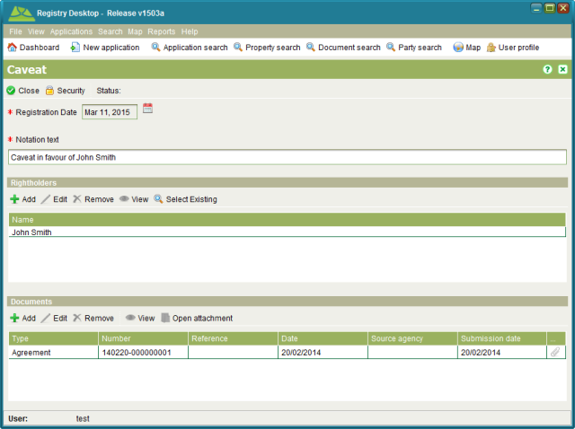

The Rightholder RRR screen is used to display information for RRR that have named
rightholders such as Occupation, Usufruct, Water Rights and Caveats. It can be accessed from
the Rights/Restrictions tab on the Property Details screen by selecting one of the RRR types
listed above and clicking  View or
View or  Edit.
Edit.

Rightholder RRR
You can enter the registration date, notation text and the details of any rightholders for the RRR as well as link any relevant documents.
To create, change or cancel a rightholder RRR you must first lodge an application with the appropriate service i.e.; Register Caveat, Register Historic Preservation Order, Register Limited Road Access, Register Servitude, New Freehold Title, Registration on Title, Convert to Digital Title, Vary Caveat, Vary Right (General), Remove Caveat or Remove Restriction (General).